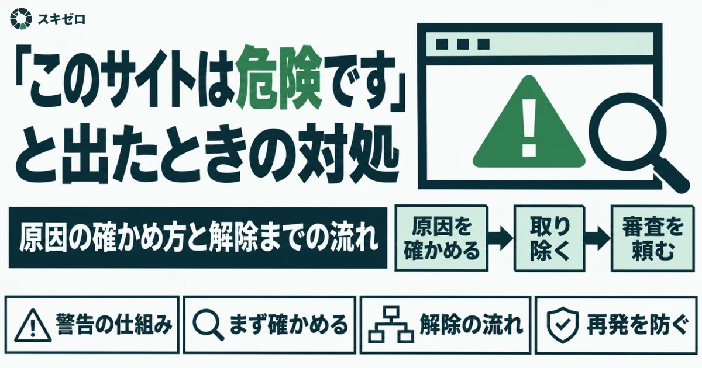
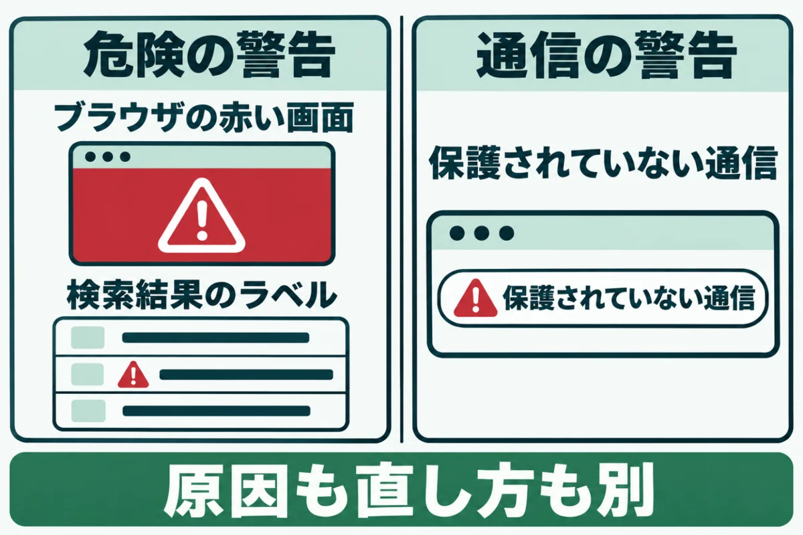
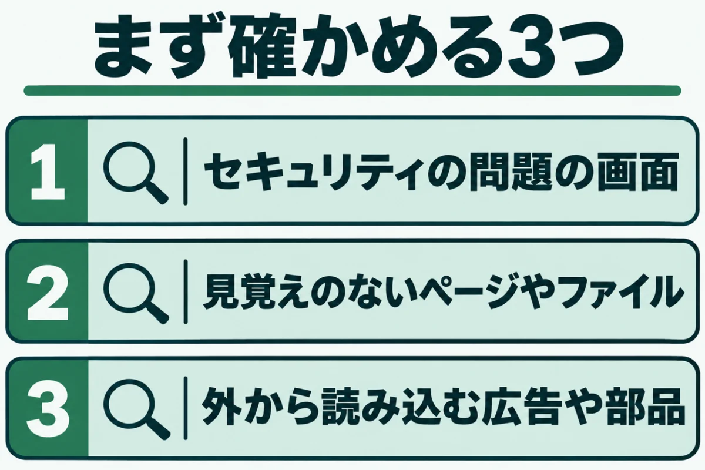
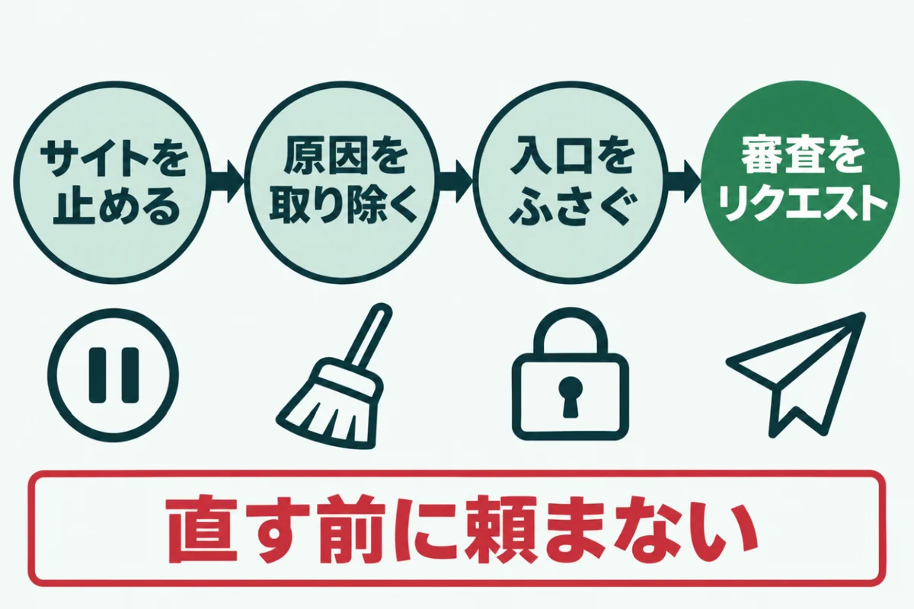
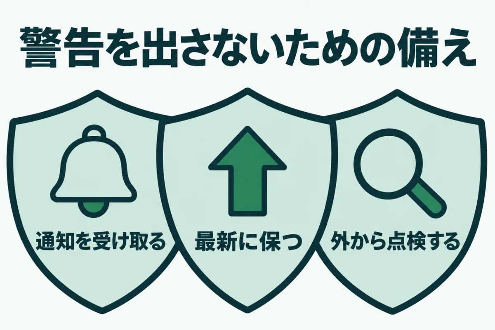

「このサイトは危険です」と警告が出たときの対処原因の確かめ方と解除までの流れ

「自分の会社のホームページを開いたら、赤い画面で『危険なサイト』と出た。お客さまにも見えているの？」と青ざめていませんか？
この警告は、サイトにだまし取りの仕掛けや危ないプログラムが見つかったときに出るものです。放っておくと、訪問者がサイトに入れないだけでなく、検索の結果にも影響します。
この記事では、「このサイトは危険です」と警告が出たときの対処を順番にまとめました。警告が出る仕組みから、原因の確かめ方、警告を外してもらうまでの流れを紹介します。
Googleの公式の案内をもとに、運営者の点検の経験も添えました。慌てて消す前に、まずは全体の流れをつかんでください。
「このサイトは危険です」と警告が出る仕組み

「このサイトは危険です」という警告は、Googleなどがサイトに危ない中身を見つけたときに出します。訪問者を守るための仕組みで、サイトの持ち主が気づく前に出ることも少なくありません。
警告の出方は大きく2つあります。ブラウザの警告画面と、検索の結果のラベルです。似た言葉の警告とも区別して、どの種類が出ているかを先に押さえましょう。
ブラウザに出る赤い警告画面
Chromeでは、サイトを開こうとすると赤い画面に「危険なサイト」と出ることがあります。だまし取りのページ、危ないプログラム、望まないソフトなどが見つかったときの表示です。
Chromeのヘルプでは、こうしたサイトには行かないよう利用者にすすめています。訪問者のほとんどは、この画面で引き返してしまうでしょう。お問い合わせや注文が急に止まったら、この画面が出ていないかを疑ってください。自分のパソコンだけでなく、スマホからも開いて確かめると安心です。
検索の結果に付くラベル
Googleの検索の結果に、サイト名と一緒に注意の文が出ることもあります。「このサイトは第三者によってハッキングされている可能性があります」といった文です。
Googleのヘルプによると、ラベルが付いている間は検索の順位にも影響が出ることがあります。検索から来るお客さまが減るおそれがあるのです。自社名で検索して、結果にラベルが付いていないかを見ておきましょう。ラベルは、問題を直して審査を受けるまで消えません。
「保護されていない通信」とは別物
よく似た警告に、アドレス欄に出る「保護されていない通信」があります。こちらは、通信が暗号化されていないことを知らせる表示です。
サイトに危ない中身が見つかったという意味ではありません。赤い全面の警告画面とは、原因も直し方も違うので注意してください。アドレス欄の表示だけなら、SSL証明書の設定を見直すことになります。鍵マークの横の表示を見れば、どちらの警告かを見分けられるでしょう。詳しくは次の記事で紹介しました。
- 参考：Manage warnings about unsafe sites｜Google Chrome Help
- 参考：Google 検索でサイトが危険とラベル付けされるのはなぜですか？｜Search Console ヘルプ
「このサイトは危険です」と出たときにまず確かめる3つ

警告が出たら、まず原因がどこにあるかを確かめます。いきなりファイルを消すと、手がかりまで消えてしまうからです。
確かめる場所は、次の3つが基本になります。3つを順に見れば、原因の見当がつくことが多いでしょう。確かめた内容は、日時とあわせてメモに残してください。あとで審査を頼むときに、そのメモが役立ちます。
① Search Consoleのセキュリティの問題
最初に見るのは、GoogleのSearch Consoleにある「セキュリティの問題」の画面です。Googleが見つけた問題の種類と、問題のあるページの例が表示されます。
種類には、ハッキング、だまし取りのページ、危ないダウンロードなどが含まれるのです。どの種類かで、探す場所と直し方が変わるでしょう。Search Consoleに登録していなければ、まず登録してから確かめましょう。登録には、サイトの持ち主であることの確認が要ります。制作会社が登録している場合もあるので、先に聞いてみてください。
② 見覚えのないページやファイル
次に、サイトの中に見覚えのないページやファイルが増えていないかを確かめます。乗っ取られたサイトには、勝手にページやファイルが置かれることが多いからです。
サーバーのファイルの一覧で、最近の日付のファイルを探しましょう。作った覚えのないファイルは、消す前に控えを取るのが大切です。WordPressなら、管理画面のユーザーに知らない名前がないかも見ます。改ざんの見分け方は、次の記事にまとめました。
ホームページが改ざんされたかも？確認したい7つのサインと自分でできる確かめ方
③ 外から読み込んでいる広告や部品
3つ目は、ほかのサイトから読み込んでいる広告や部品です。自分のサイトに問題がなくても、読み込んだ先が原因で警告が出ることがあります。
Googleは、外部の広告やアプリは信頼できる提供元のものを選ぶよう案内しているのです。最近足した広告や計測のタグから順に疑うとよいでしょう。使っていない部品は、この機会に外しておくと安心です。どこから何を読み込んでいるかを、一覧にしておくと次からの点検も楽になります。
「このサイトは危険です」の警告を解除する流れ

警告を外してもらうには、原因を取り除き、Googleに審査を頼む必要があります。直すだけでは、警告は自動では消えません。
Googleのヘルプでは、サイトを止め、片付け、守りを固めてから戻す流れをすすめています。次の4つの段階で進めましょう。自分で進めるのが難しければ、早めに制作会社や専門の業者に相談してください。
サイトを止めて広がりを防ぐ
ハッキングが疑われるときは、まずサイトを一時的に止めます。訪問者が危ないページを開いたり、ファイルを落としたりするのを防ぐためです。
サーバーの管理画面で、メンテナンス中の表示に切り替える方法があります。止める前に、今のファイルとデータベースの控えを取ることも忘れないでください。控えは、原因を調べる手がかりになります。取引先やお客さまには、点検中であることを短く知らせておくとよいでしょう。サーバー会社に連絡して、止め方を聞くこともできます。
原因を取り除く
次に、Search Consoleで示されたページや、見覚えのないファイルを片付けます。きれいだったころのバックアップがあれば、そこから戻すのが早道です。
ただし、戻したバックアップにも問題が残っていないかを確かめます。いつ入り込まれたかが分からないと、汚れた控えに戻すおそれがあるのです。改ざんからの戻し方は、次の記事で詳しく紹介しています。戻したあとは、問題のあったページがきれいになったかを必ず開いて確かめてください。
入られた入口をふさぐ
片付けただけでは、同じ入口からまた入られてしまいます。入口をふさいでから、サイトを戻しましょう。
WordPressの本体、テーマ、プラグインを新しい版に上げ、使っていないものは消します。管理画面とサーバーのパスワードもすべて変えるのが基本です。知らないユーザーがいれば、消してから作業を続けてください。PHPの版が古いままなら、あわせて見直しておくと守りが固くなります。FTPやデータベースのパスワードも、変えたものを記録しておきましょう。
審査をリクエストする
直し終えたら、Search Consoleの「セキュリティの問題」の画面で審査を頼みます。ボタンの名前は「審査をリクエスト」です。何が問題で、どう直したかを具体的に書いてください。
Googleによると、審査には数日から数週間かかることがあります。直す前に審査を頼むと、警告が出る期間がかえって長引くので注意しましょう。問題が短い間に何度もくり返すと、30日間は審査を頼めなくなる決まりもあります。返事が来るまでは、同じ審査を送り直さないでください。
「このサイトは危険です」と表示されないための備え

警告が出てから慌てないために、ふだんから備えておきましょう。備えは、早く気づく仕組みと、入られにくい作りの2つに分かれます。
どちらも大きな費用はかかりません。早く気づけるかどうかで、その後の手間が大きく変わります。気づくのが早いほど、被害も審査の手間も小さく済むはずです。次の3つを、今日からの習慣にしてください。
Search Consoleで通知を受け取る
Googleは、サイトの持ち主にSearch Consoleへの登録を強くすすめています。ハッキングなどが見つかったとき、メールで知らせてもらえるからです。
運営者も、自社のサイトをSearch Consoleに登録しています。通知を受け取るアドレスが、ふだん見ているものかを確かめておきましょう。前の担当者のアドレスのままでは、知らせが届いても気づけません。制作会社に任せている場合は、通知が誰に届くかを聞いておいてください。
本体とプラグインを最新に保つ
乗っ取りの入口になりやすいのは、古いまま残ったプログラムです。WordPressの本体とテーマ、プラグインは、更新が出たら早めに当てましょう。
Googleも、使っているソフトとプラグインの一覧を作り、更新を続けるよう案内しています。一覧があれば、更新の漏れに気づきやすいのです。使っていないプラグインは、更新を待つより消してしまうほうが確実でしょう。更新の前には、必ずバックアップを取ってください。更新のあとは、表示とフォームが動くかを確かめます。
外から定期的に点検する
自分のサイトは、毎日見ていても変化に気づきにくいものです。外から定期的に点検して、弱点が増えていないかを確かめましょう。
古いプログラムや、外に見えてはいけないファイルは、外からの点検で見つけられます。警告が出る前に弱点をふさぐことが、いちばんの備えです。点検の結果と日付を残しておけば、次に何を直すかも決めやすくなるでしょう。月に1回など、点検の日を決めておくと続けやすくなります。結果は社内で共有しておくと安心です。
- 参考：Google 検索でサイトが危険とラベル付けされるのはなぜですか？｜Search Console ヘルプ
- 参考：How To Prevent Malware Infection｜Google Search Central
URLを入れるだけで、古いプログラムや見えてはいけないファイルなど8項目を無料で判定します。登録はいりません。
無料で診断する「このサイトは危険です」に関するよくある質問
自分のパソコンだけで警告が出ている場合もありますか？
パソコンに入った不正なソフトや、ブラウザの拡張機能が警告や広告を出すこともあります。別のパソコンやスマホから開いて、同じ警告が出るかを確かめてください。
どこから開いても出るなら、サイトの側に原因がある見込みが高いでしょう。Search Consoleの「セキュリティの問題」の画面もあわせて見ておくと確実です。
警告画面の先へ進んで、自分のサイトを確かめてもいいですか？
警告画面から先へ進むことはできますが、危ないプログラムを開いてしまうおそれがあります。中身を確かめるときは、サーバーのファイルの一覧や管理画面から見るほうが安全です。
ページの見た目を確かめたいときも、ふだん使いのパソコンでは開かないようにしましょう。分からないときは、無理をせずに専門の業者に任せてください。
審査をリクエストしてから、どのくらいで警告が消えますか？
Googleのヘルプでは、審査には数日から数週間かかるとされています。審査が通っても、表示から警告が消えるまでには少し時間がかかるのです。
結果は、Search Consoleの画面とメールで知らされます。審査を待つ間も、問題が再び起きていないかを見張っておきましょう。1日以上たってから、検索の結果とブラウザの表示を見直すと確かです。
警告が出ている間、サイトは閉じておくべきですか？
ハッキングが疑われるなら、原因を取り除くまでは止めておくのが安全です。止めずにいると、訪問者に危ないページを見せ続けることになります。
止めている間は、電話やメールなど、ほかの連絡先を案内しておきましょう。取引先には、点検中であることと再開の目安を伝えておくと安心です。前もって知らせておけば、問い合わせが重なるのも防げます。
自分で直すのが難しいときは、どこに頼めばいいですか？
まずは、サイトを作った制作会社や、保守を頼んでいる会社に相談してください。サーバー会社に、ファイルの復元を頼める場合もあります。
どこにも頼み先がないときは、改ざんの対応を受けている専門の業者を探しましょう。料金と、どこまで直してくれるかを先に確かめてください。頼む前に、何が起きたかと、いつ気づいたかをメモにまとめておくと話が早く進みます。
まとめ
「このサイトは危険です」と警告が出たら、まずSearch Consoleで種類を確かめましょう。そのうえで、見覚えのないファイルや外から読み込む部品を順に調べます。
原因を取り除き、入口をふさいでから、「審査をリクエスト」で警告を外してもらうのが解除までの流れです。審査には数日から数週間かかります。
ふだんから通知と更新、外からの点検をそろえておきましょう。警告が出る前に気づける仕組みが、いちばんの守りになります。
まずは、今の状態を知るところから。
URLを入れるだけで、数十秒で判定が出ます。登録はいりません。